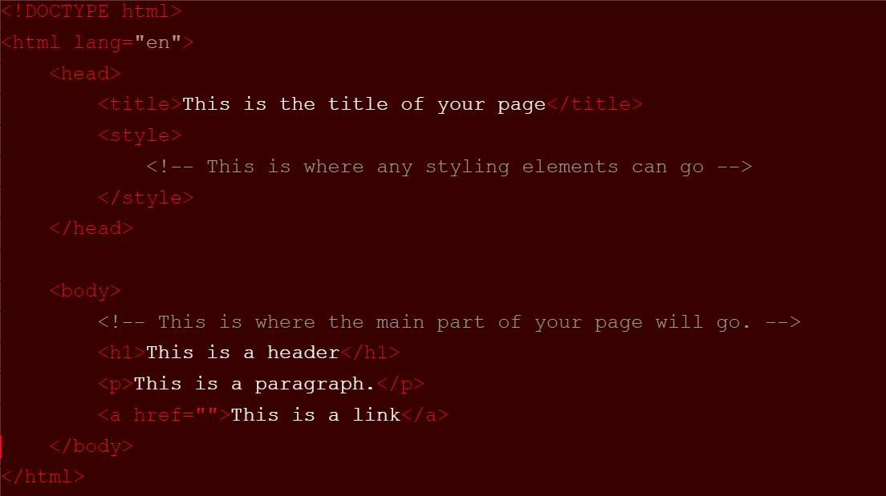
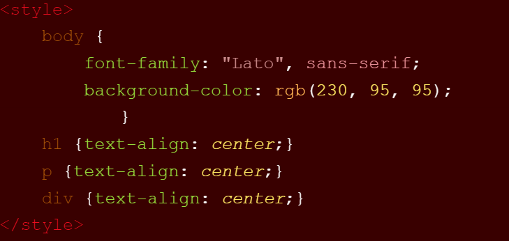

How to Code Your Own Website for Beginners
(Completely for Free!)
By Taylor Sapp
I have always wanted to have something to share my thoughts with. To organize the many ramblings of my mind. I have tried many
life-organization websites and apps for my day-to-day work, like keeping track of homework and meetings and things. And that has
worked out for me… for the most part at least. But I didn’t have anything to just let all my thoughts out there. Personal and
professional alike.
I don’t know if it is like this for everyone with anxiety and depression, but I have never been too good at keeping a journal. First of all,
my thoughts come at me a mile a minute and the idea of trying to write them all out really amps up my anxiety. Second of all, there are so
many different types of things in my head that I want to let out. I want to rant about whatever is on my mind. I want to write reviews for
good books that I read and shows that I watch. I want to share and keep track of all the hobbies I try. It just all feels like too much for
a little journal to handle. And lastly, I simply lack the motivation to pick up a journal and write in it every night. It doesn’t sound
appealing to me and thinking of the very act fills me with dread.
And so I thought of blogging. With a website, I could share as much as I wanted, from rants to tutorials to reviews. With typing out my
thoughts, I could get them out there faster than writing. A web page also facilitates a connection with other people who share similar
thoughts and ideas that a tangible journal does not. It really doesn’t matter to me if nobody comes across my page on their own. I’m not
doing anything to advertise. But that doesn’t mean I can’t share it with my close friends and family. And if you have private thoughts that
you really don’t want even those close to you knowing about, you can create private pages too!
Once the seed was planted in my head, I began looking up how I could start something like that. There are many web-building websites out
there, and I tried out a few, but had some trouble with fixing the formatting to my liking and getting rid of cookies so others could view
my pages. However, if you want a more simple option, there are a lot of free sites out there to help you create a website, no coding needed!
When I was in the sixth grade, I took a computer class where we coded very basic web pages, and while I was exploring my options for my blog,
I thought back to that class. I wondered if I could code my own website for what I wanted to do. As an engineering student, I already had
some basic coding knowledge. I learned the ropes of Matlab and Python in my classes, and was honestly really interested in learning more
about coding, so the idea of creating a website from scratch didn’t scare me. And at a fairly low point in my life, it gave me purpose.
The first thing I did was, obviously, research exactly what it was I had to do. As I mentioned earlier, I found a lot of websites that
could do a lot of the code building for you, but I really wanted to do this on my own. And so, I learned a bit about coding in HTML. From
what I found online, I think that HTML is used for the basic building blocks of a lot of websites, and CSS is used for some styling aspects.
HTML is super easy to understand, and I picked it up pretty quickly. Websites like W3 Schools really
helped me through the process. What I wanted to do first was learn how to make writing and working links on the page. Once I could get
that down, I would worry about color and other details.
Step 1: Code Editors
I guess if I were to create a list of steps, the first would be to download a good code editor. I used Visual Studio Code (download here), and it has been working perfectly for me. You can create Python, HTML, Java, and many other types of files, so it’s great for a wide span of projects. It is also free to download! Always a plus. Another thing I recommend is installing a Live Server extension in Visual Studio Code. This allows you to see in real time how your code is working, without publishing your website yet.
Step 2: Learn to Code
The next step would be to learn some basics of coding in the language that you want to use primarily for your site. I used LinkedIn Learning, which I found extremely helpful. I believe it is free for students, but I am not quite sure how much it costs for non-students. I think it is highly worth paying for (if the price is reasonable), because there are so many different topics you could learn about with videos, activities, practice quizzes, and more. I watched a few videos on coding a basic website with HTML, following along until I got the hang of things.
Step 3: Put it to the Test
After learning the coding basics, it’s time to put your knowledge to the test! Just start simple with a single line of text. Then you can add some headers, images, links, whatever you want really. Now, I lied to you before when I said I wanted to do this all on my own, because I definitely copied and pasted a lot of code that was already out there. Just anything I could find on the internet relating to what I wanted to do. It took a lot of trial and error, but I came closer and closer to my vision every adjustment I made. And, of course, I am still a beginner. I am still working on adding new things to my website, but for now, I’m solid!
Step 4: Publish that B*tch
Really, the last thing is publishing your website! Unfortunately, you do need help from an outside site for this part. At least as a beginner you do. I would assume there has to be a way to do it from scratch as well, but that is beyond the scope of my knowledge. So, you need a web-building site to help you, just this once. I used GitHub, and I think it’s working great! It is free to use and gives you pretty much complete control over anything you want to do to your website. You are able to make your site private or public, host multiple different sites, add features created from GitHub, etc. Once you add a repository to your account and upload your coding files, you have officially created your very own website. GitHub also allows you to either update your website code directly on their site or through a code editor, like Visual Studio Code, so you can continue to improve your website over time.
Here are a couple examples from the code I used to get started.


Have fun web building!